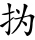
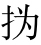

志兄：
廿二日信已收到。前月得信后，我是即复一信的，既未收到，那是被遗失或没收了。《落花集》在现代搁置多日，又被送还，据云因曾出版，所以店主反对，争之甚力，而终无效云云，现仍在我处，暂时无法想。这回的稿子[500]，当于明日寄给《论语》，并且声明，许其略改犯禁之处。惟近来之出版界，真是战战兢兢，所以能登与否，亦正难必，总之：且解[听]下回分解罢。
德哥派拉君之事[501]，我未注意，此君盖法国礼拜六派，油头滑脑，其到中国来，大概确是搜集小说材料。我们只要看电影上，已大用菲洲，北极，南美，南洋……之土人作为材料，则“小说家”之来看支那土人，做书卖钱，原无足怪。阔人恭迎，维恐或后，则电影上亦有酋长飨宴等事迹也。
《募修孔庙疏》[502]不必见寄，此种文字，所见已多，真多于“牛溲马勃”[503]，而且批评文字，亦无处发表，盖庙虽未修，而礼教则已早重，故邪说无从盛行也。
上海尚未大冷，我们是好的。
此复，即颂
时绥。
迅 上 十二月廿八夜
[4] 赵家璧（1908—1997） 江苏松江（今属上海市）人，作家，出版家。曾任上海良友图书印刷公司编辑。1932年至1936年间因出版《良友文学丛书》、《中国新文学大系》、《苏联版画集》等，与鲁迅有较多往还。
[5] 此信手稿不全，第三段起据收信人作《鲁迅印想记》（1936年11月上海金汤书店出版）所载补齐编入。
[7] 《文学杂志》 月刊，北平“左联”刊物，王志之、谷万川、潘训、陆万美等人编辑。1933年4月创刊于北平，同年7月出至第三、四期合刊后停刊，西北书局出版。
[8] 张君 指张天翼，参看330201信注〔1〕。当时北平“左联”成员金湛然（朝鲜人）拟用世界语翻译一部世界文学作品集，其中准备收张天翼的作品，曾托王志之函请鲁迅转请作者选定。
[9] 《仇恨》 短篇小说，张天翼作，载《现代》第二卷第一期“创作增大号”（1932年11月）。
[10] 《现代》 文艺月刊，施蛰存、杜衡编辑，1932年5月创刊于上海，现代书局出版。1935年3月改为综合性月刊，汪馥泉编辑，同年5月出至第六卷第四期停刊，共出版三十四期。
[11] 冰莹女士 即谢冰莹（1906—2000），湖南新化人，女作家。著有《从军日记》等。
[12] 杨邨人（1901—1955） 广东潮安人。1925年参加中国共产党，1928年参加“太阳社”，后又参加“左联”。1932年背叛革命。
[13] 指鲁迅应郁达夫之请所写自作诗《无题》（洞庭浩荡楚天高）与《答客诮》两幅。
[14] 亚子 柳亚子（1887—1958），名弃疾，号亚子，江苏吴江人，诗人，南社创始人之一，同盟会成员。长期从事爱国民主活动。著有《磨剑室诗集、词集、文集》等。
[15] 鲁迅1933年1月19日日记：“下午达夫来，并交诗签二，其一为柳亚子所写。”按，郁达夫赠鲁迅诗为：“醉眼朦胧上酒楼，彷徨呐喊两悠悠。群氓竭尽蚍蜉力，不废江河万古流。”柳亚子赠鲁迅诗为：“附势趋炎苦未休，能标叛帜即千秋。稽山一老终堪念，牛酪何人为汝谋。”
[18] 诗笺 指蔡元培书赠鲁迅的两首诗。其一为：“养兵千日知何用，大敌当前喑不声。汝辈尚容说威信，十重颜甲对苍生。”其二为：“几多恩怨争牛李，有数人才走越胡。顾犬补牢犹未晚，只今谁是蔺相如？”
[19] 宋庆龄（1893—1981） 广东文昌人。孙中山夫人，社会活动家。当时和蔡元培、鲁迅等组织民权保障同盟，反对国民党独裁统治。
[20] 黄平（1901—1981） 湖北汉口人。曾在中共中央六届三中全会被选为中央委员，担任过中共驻共产国际代表、国际反帝同盟执行委员。当时任中华全国总工会书记，在天津视察工作时被捕，先后被关押在国民党河北省党部、天津市公安局和南京宪兵司令部。
[21] 张天翼（1906—1985） 号一之，湖南湘乡人，作家，“左联”成员。著有小说集《蜜蜂》、《畸人集》等。
[24] 《小彼得》 短篇小说，张天翼作，载《小说月报》第二十二卷第十号（1931年10月10日）。
[26] 雪声 即段雪笙（1891—1945），原名泽杭，字翰荪，改名雪笙，贵州赤水人。曾任北方左联党团书记。
[27] 原件“干”字破损，不可辨认，据收信人作《鲁迅印想记》所载补入。
[28] 《面包线》 短篇小说，张天翼作，后收入《畸人集》。
[30] 属写之笺 据鲁迅1933年1月26日日记：“夜为季甫书一笺，录午年春旧作。”按，即《无题》（惯于长夜过春时），午年应为未年（1931）。
[31] 《二十家集》 即《苏联作家二十人集》。原拟题《新俄小说家二十人集》。参看320911①信注〔8〕。
[32] 郑振铎（1898—1958） 笔名西谛，福建长乐人，作家、文学史家，文学研究会主要发起人。曾主编《小说月报》等刊物。著有《插图本中国文学史》、短篇小说集《桂公塘》等。
[34] 齐白石（1863—1957） 本名纯芝，后改名璜，湖南湘潭人，画家、篆刻家。
[35] 孙伯恒（1879—1943） 名壮，字伯恒，河北大兴（今属北京）人，当时任北京商务印书馆经理。
[39] 《被解放之Don Quixote》 即《解放了的堂吉诃德》，剧本，苏联卢那察尔斯基著，易嘉（瞿秋白）译，鲁迅作《后记》并译《作者传略》，1934年4月上海联华书局出版。
[40] 关于文艺理论之论文 指《现实——马克思主义文艺论文集》，后收入《海上述林》。
[41] 《暧昧》 短篇小说集，何家槐著。1933年1月上海良友图书印刷公司出版，为《良友文学丛书》之一。
[43] 指每行第一字的地位出现标点等。参看330206信。
[44] 民权保障会 即中国民权保障同盟。1932年12月由宋庆龄、蔡元培、鲁迅、杨杏佛等发起组织的群众团体；总会设上海，继又在上海、北平成立分会。该组织反对国民党的独裁统治，积极援助政治犯，争取集会、结社、言论、出版等自由。它曾对国民党监狱中的黑暗实况进行调查并向社会揭露，因此遭受国民党当局的忌恨和迫害。1933年6月杨杏佛被暗杀后解散。
[45] 以酉为申 我国旧时以干支纪年，酉年肖鸡，申年肖猴，故下文有“以猢狲为公鸡”的话。
[47] 在辅大之讲演 指《今春的两种感想》，后收入《集外集拾遗》。
[50] 北新被封两回 参看261015①信注〔3〕及321103信注〔3〕。
[53] 黎烈文（1904—1972） 湖南湘潭人，翻译家。1932年12月至1934年5月任《申报·自由谈》主编，后又任《中流》半月刊编辑。
[54] 萧伯纳（G.B.Shaw，1856—1950） 英国剧作家、批评家，出生于爱尔兰的都柏林。著有剧本《华伦夫人的职业》、《巴巴拉少校》、《真相毕露》等。1933年2月17日他经香港到上海，《申报·自由谈》于17日、18日出《萧伯纳专号》，发表了鲁迅、茅盾、郁达夫、黎烈文等评介萧伯纳及其作品的文章。
[55] 关于萧者一篇 指郁达夫在1933年2月2日《申报·自由谈》上发表的《萧伯纳与高尔斯华绥》，后编入《萧伯纳在上海》。
[56] 讲稿 指《今春的两种感想》，后收入《集外集拾遗》。
[57] 白话诗 指刘半农编《初期白话诗稿》，1932年北京星云堂出版。
[58] 1933年2月17日鲁迅应邀赴宋庆龄宅与萧伯纳会晤并摄影。参看《南腔北调集·看萧和“看萧的人们”记》。又，据1933年3月1日《论语》第十二期镜涵的《萧伯纳过沪谈话记》，当时萧对鲁迅说：“他们称你为中国的高尔基，但是你比高尔基漂亮！”鲁迅答：“我更老时，将来还会更漂亮。”
[59] 问尖而答愚 据1933年2月18日上海《申报》，萧伯纳在上海笔会举行的欢迎会上和梅兰芳谈及中国演剧锣鼓声过闹，会损害观众注意力，梅答：“中国戏剧有两种，昆曲即为不闹之一。”
[60] 《萧伯纳在上海》 上海中外报刊所载关于萧伯纳访沪文章的汇集，鲁迅、瞿秋白编，署名乐雯，鲁迅写序，1933年3月上海野草书屋出版。
[62] 杨杏佛（1893—1933） 名铨，字杏佛，江西临江（今清江）人。早年留学美国，回国后曾任东南大学教授、中央研究院总干事等职。1932年底和宋庆龄、蔡元培、鲁迅等组织中国民权保障同盟，任副会长兼总干事。1933年6月18日在上海遭国民党特务暗杀。
[63] 《论语》 文艺性半月刊，林语堂等编，1932年9月在上海创刊，1937年8月停刊，共出一一七期。第十二期（1933年3月1日）为“萧伯纳访沪专辑”。
[64] 胡博士的主张 1933年2月20日北平《晨报》载《胡适昨日谈片》：“本人以为最诚恳之招待，即为不招待。”
[65] 胡博士有攻击民权同盟之文章 胡适在北平《独立评论》周刊第三十八号（1933年2月19日）发表的《民权的保障》中说：“前日报载同盟的总会宣言有要求‘立即无条件的释放一切政治犯’的话……这不是保障民权，这是对一个政府要求革命的自由权。一个政府要存在，自然不能不制裁一切推翻政府或反抗政府的行动。”“我们观察今日参加这个民权保障运动的人的言论，不能不感觉他们似乎犯了一个大毛病，就是把民权保障的问题完全看作政治的问题，而不看作法律的问题，这是错误的。”民权同盟，即中国民权保障同盟；胡适曾担任北平分会主席，后被开除。
[66] 平报 指刊有未名社声明的北平《晨报》，该声明于3月6、7、8三日始见刊出。
[69] 姚克（1905—1991） 原名志伊，字莘农，浙江余杭人，翻译家、剧作家。曾任英文《天下》月刊编辑，明星影片公司编剧委员会副主任。当时因协助斯诺翻译鲁迅作品而结识鲁迅。作有剧本《西施》、《楚霸王》、《清宫秘史》等。
[70] 《艺术新闻》 周刊，夏芦江编辑，1933年2月17日在上海创刊，1933年3月11日出至第四期停刊。该刊第二期（1933年2月25日）刊登编者写的一篇短文，征求关于鲁迅的《五讲三嘘集》所“嘘”对象的答案，其中说：“听说鲁迅不久就要出一本书，名字叫《北平五讲和上海三嘘》。”又说：“北平五讲是大家知道了的，上海三嘘……请读者试猜一猜……”第三期（1933年3月4日）即以《鲁迅的“三嘘”揭晓》为题公布答案，说“要被嘘的三位”是：“一杨邨人、二梁实秋、三张若谷。”
[72] 《白纸黑字》 关于书籍历史的通俗读物，苏联伊林（Ильин，1895—1953）著。英译本于1932年伦敦出版，译者为比特里斯·金西德（B.Kincead）。几个错误的中国字，见该书第六章。
[73] 指1933年2月28日至3月2日《申报》所载未名社声明：“现经全体社员议决，将未名社及未名社出版部名义完全取消，由社员韦素园、曹靖华、台静农、李霁野、韦丛芜将出版部印刷发行事务完全委托上海开明书店办理，所存书版亦归该店承受。至本社社员欠人之款，概归未名社结束处自理，与开明书店无涉，特此声明，北平未名社启。”
[74] 未名社结束时，经结算应付还鲁迅垫付本金和版税三千余元，乃议定将该社盘给开明书店的书版等项所值二千三百余元全部付给鲁迅。开明书店提出未名社须在北平、上海报纸各登公开宣告出盘的广告三日才同意付款。广告刊出后，开明书店于1933年3月14日、9月5日、14日三次将该款付给了鲁迅。
[75] 大局一变 1933年1月，日军侵占山海关后，又向长城各口大举进犯；蒋介石于3月间派何应钦取代张学良为北平军政首脑，进一步推行不抵抗政策，华北形势危急。
[78] “上海三嘘” 指鲁迅曾拟写的批判梁实秋、杨邨人、张若谷三人的文章。后未写成。参看《南腔北调集·答杨邨人先生公开信的公开信》。
[81] 指《鲁迅杂感选集》，何凝（瞿秋白）选编并作序，共收杂文七十四篇，1933年7月上海青光书局出版。
[82] 鲁迅1933年3月24日日记：“下午姚克邀往蒲石路访客兰恩夫人。”
[86] 迁寓 1933年4月11日鲁迅自北川公寓迁居施高塔路大陆新邨九号。
[87] 明之 与下文“明公”，均指邵文熔（1877—1942），字铭之，浙江绍兴人，曾同与鲁迅留学日本。
[89] 令弟 即姚志曾，字省吾，浙江余杭人。当时是上海东吴大学学生，后在上海中国实业银行任职，曾为鲁迅和在北平的姚克转递信件。
[90] 此信据《现代作家书简》所载编入。
施蛰存（1905—2003），浙江杭州人，作家，当时在上海现代书局任《现代》月刊编辑。
[92] 洋贰拾元 系鲁迅给北平“左联”《文学杂志》的捐款。王志之时任该刊编辑。
[96] 各寄一篇 指《文章与题目》、《新药》，后均收入《伪自由书》。
[98] 曹聚仁（1900—1972） 字挺岫，号听涛，浙江浦江人，作家。当时在上海暨南大学任教并主编《涛声》周刊。著有《鱼龙集》等。
[99] 守常 即李大钊。参看190419信注〔3〕。遗著，指《守常全集》。1933年4月编定。收文三十篇，分上下两卷。原拟由上海群众图书公司出版，因受国民党审查阻挠，直至1939年4月始以社会科学研究社名义出版（北新书局发行）。鲁迅所撰《〈守常全集〉题记》，后收入《南腔北调集》。
[100] 此信据韬奋编译的《革命文豪高尔基·后记》所载编入。
邹韬奋（1895—1944），原名恩润，笔名韬奋，江西余江人，政论家、出版家。中国民权保障同盟执行委员，《生活》周刊主编、生活书店创办人。著有《萍踪忆语》、《萍踪寄语》、《经历》等。
[101] 《生活》 周刊，1925年10月在上海创刊，生活周刊社出版。1926年以后由邹韬奋主编。1933年12月被迫停刊。
[102] 《高尔基》 即《革命文豪高尔基》。1933年4月邹韬奋根据美国康恩所著《高尔基和他的俄国》（Alexander Kaun：Maxim Gorky and his Russia）改编而成。同年7月上海生活书店出版。该书共收插图十三幅，其中有十幅为鲁迅提供。
[106] 此信据收信人作《鲁迅印想记》所引编入。信的首尾均为收信人引录时略去。
[107] 郑朱 郑，指郑振铎。朱，指朱自清（1898—1948），字佩弦，江苏东海人，作家，学者，文学研究会成员。当时任清华大学中国文学系主任。著有散文集《背影》等。1933年4月23日，他们应邀出席文学杂志社在北京北海公园举行的文艺茶话会。
[108] 去年的事 指台静农1932年12月12日在北京被国民党逮捕事。
[112] 此信据1933年7月《洪荒》月刊创刊号所载编入。
周茨石（1902—1994），原名冯润璋，笔名周茨石，陕西泾阳人，“左联”成员。1933年7月1日在上海创办《洪荒》月刊。
[113] 1933年5月25日《申报·自由谈》刊出编者黎烈文“吁请海内文豪，从兹多谈风月，少发牢骚”的启事。参看《伪自由书·后记》。
[115] 反汗 反悔、食言，通常指收回成命。《汉书·刘向传》：“号令如汗，汗出而不反者也。今出善令，未能踰时而反，是反汗也。”反通“返”。
[116] 指《保留》、《再谈保留》、《“有名无实”的反驳》、《不求甚解》四篇，后均收入《伪自由书》。
[117] 言语道断 佛家语。不可言说，无话可说的意思。《璎珞经》：“言语道断，心行处灭。”
[119] 《涛声》 文艺性周刊，曹聚仁编辑。1931年8月15日在上海创刊，1933年11月停刊。
[120] 后题作《论“赴难”和“逃难”》，收入《南腔北调集》。
[121] 两篇 指《夜颂》、《推》，后均收入《准风月谈》。
[122] 近来天气大不佳 指政治形势险恶。中国民权保障同盟总干事杨杏佛即于作此信之日间遭暗杀，据传国民党特务已发出暗杀五十余人的黑名单，参看330620②信注〔2〕。
[124] 照片 指1933年5月26日鲁迅在雪怀照相馆所摄照片及与姚克的合影。
[125] 魏忠贤（1568—1627） 河间肃宁（今属河北）人，明末天启时专权的宦官。任司礼监秉笔。他掌管特务机关东厂，凶残跋扈，杀人甚多。当时趋炎附势之徒对他竞相谄媚，《明史·魏忠贤传》记载：“群小益求媚”，“相率归忠贤，称义儿”，“监生陆万龄至请忠贤配孔子”。
[127] 颜厚有忸怩 语见《尚书·五子之歌》：“郁陶乎予心，颜厚有忸怩。弗慎厥德，虽悔可追。”
[128] 渔仲 即郑樵（1103—1162），福建莆田人，宋代史学家。著有《通志》、《夹漈遗稿》等。亭林，即顾炎武（1613—1682），字宁人，号亭林，江苏昆山人，明末清初学者、思想家。著有《日知录》、《天下郡县利病书》等。
[129] 书记 旧时称办理文书和从事缮写工作的人员为书记。
[131] 太炎 即章炳麟，参看110731信注〔4〕。小学，旧时关于文字、音韵、训诂等学问的统称。
[132] 投壶 古代宴会时的一种娱乐。宾主依次投矢壶中，负者饮酒。《礼记·投壶》孔颖达注引郑玄的话，以为投壶是“主人与客燕饮讲论才艺之礼”。孙传芳盘踞东南五省时，章太炎任孙组织的婚丧祭制会会长，曾主张恢复“投壶”古礼。但该年8月6日，孙传芳在南京举行投壶仪式时，曾请章太炎主持，章却未去。
[133] 据章太炎亲属回忆，1927年“四一二”国民党“清党”后，章在浙江余杭老家仓前镇的房子曾被国民党当局没收。
[134] 欧洲先前虐杀耶稣教徒 公元29年前后，欧洲的一些耶稣教教徒常遭虐杀，有的被钉十字架，有的被杀被焚，甚至有被绑进演技场或剧场喂食狮子的。传说使徒彼得等均在罗马殉道，后来西方史书遂尊称他们为“圣彼得”等。
[135] 林语堂（1895—1976） 福建龙溪人，作家。早年留学美国，曾任北京大学、北京女子师范大学、厦门大学等校教授。《语丝》撰稿人之一。三十年代在上海主编《论语》、《人间世》、《宇宙风》等杂志，提倡“性灵”、“幽默”。
[136] 打油 即打油诗。传说唐代人张打油所作的诗常用俚语，且故作诙谐，有时暗含嘲讽，被称为打油诗。
[137] 虫二 隐指“風月”，由“風月无边”变化而来。清褚人获《坚瓠集》引《葵轩琐记》：“唐伯虎题妓湘英家匾云：‘風月无边。’见者皆赞美。祝枝山见之曰：‘此嘲汝辈为虫二也。’湘英问其义，枝山曰：‘風月字无边，非虫二乎？’”
[139] 榴花艺社 文学团体。由唐诃等人发起，1933年春成立于太原。曾出版《榴花》周刊，附《山西日报》发行，出至第七期被禁。
[140] 计画杀害者尚有十余人 据《中国论坛》第三卷第八期（1933年7月14日）所载蓝衣社6月15日发出秘密通告的《钩命单》，该社计划暗杀者除杨铨外，尚有“陈绍禹、秦邦宪、胡汉民、李宗仁、方振武、吉鸿昌、鲁迅、茅盾”等五十六人。
[141] Pío Baroja 即巴罗哈（Pío Baroja y Nessi，1872—1956），西班牙作家，著有长篇小说《为生活而斗争》三部曲、《一个活动家的回忆录》等。
[143] 茅稿 指茅盾作《“杂志办人”》，载《文学杂志》第三、四号合刊（1933年7月31日）。
[144] 谷兄 指谷万川（1905—1970），河北望都人，北平“左联”成员，当时是北京师范大学学生，《文学杂志》编者之一。
[145] 《十月》 中篇小说，苏联雅柯夫列夫（1886—1953）著，鲁迅译，1933年2月上海神州国光社出版。作者1905年曾参加俄国社会革命党，1920年是同路人文学团体“谢拉皮翁兄弟”中的一员。
[146] 丁事的抗议 指当时上海、北平报刊登载蔡元培等三十八人为抗议国民党逮捕丁玲、潘梓年致南京政府电，以及文化界丁潘营救会发表的宣言等。丁玲（1904—1986），原名蒋冰之，湖南临澧人，作家，“左联”成员，《北斗》主编。著有短篇小说集《在黑暗中》、中篇小说《水》等。
[147] 《落花集》 原名《血泪英雄》，王志之著，1929年9月北平东方书店出版。后作者将其中的历史剧《血泪英雄》抽去，保留小说五篇和诗二首，改名《落花集》，鲁迅曾为校订，但未能出版。
[148] “翰林院大学士” 翰林院的掌院学士，按清制，例兼礼部侍郎，为从二品。鲁迅的祖父周福清（1838—1904）为清同治进士，曾任翰林院编修，为正七品。
[149] 大衍 语见《周易·系辞》：“大衍之数五十。”后来“大衍”成为五十的代词。
[150] 投我琼瑶 语出《诗经·木瓜》：“投我以木桃，报之以琼瑶，匪报也，永以为好也。”
[151] 立人先生大作 据韦丛芜回忆，指他在南京自费印行的《合作同盟》，当时只分送了十几份，并未向外发行。立人，即韦丛芜。
[152] 罗清桢（1905—1942） 广东兴宁人，木刻家。当时在广东梅县松口中学任教。作品有《清桢木刻画》等。
[153] 木刻画集 指《清桢木刻画》第一辑，由作者自费手印。
[155] 《时事新报》 1907年12月在上海创刊。初名《时事报》，后合并于《舆论日报》，改名为《舆论时事报》，1911年5月18日起改名《时事新报》。初办时为改良派报纸；辛亥革命后，曾是拥护段祺瑞的政客集团研究系的报纸。1927年后由史量才等接办。1935年后为孔祥熙收买。1949年5月上海解放时停刊。
[156] 汤增敭（1908—？） 浙江吴兴人，当时的文学青年，为参与鼓吹“民族主义文学”的《草野》半月刊（后改周刊）的编者之一。1933年7月6日《时事新报》载有《汤增敭启事》：“予现专任职于时事新报馆，对于外间各刊物均无关系，前阅某新闻，载曾某（按指曾今可）宣称，予曾与某君同往校对××周刊等语，殊属骇异。予自《星期文艺》停刊后，从未往任何印刷所及与人作校对事宜，显然为曾某之信口雌黄，任意造谣。嗣后如再有此项不负责任之事情发生，当诉诸法律，决不宽恕。”（原文无标点）
[157] 曾某 指曾今可（1901—1971），江西泰和人。曾留学日本，当时在上海创办新时代书局，出版《新时代》月刊及《文艺座谈》半月刊、《文艺之友》周刊等。
[158] 小风波 指曾今可、崔万秋、汤增敭间发生的一场纠纷。参看《伪自由书·后记》。
[159] 崔万秋（1908—？） 山东观城（今与河南范县等合并）人。曾留学日本，1933年3月回国，任《大晚报》文艺副刊《火炬》主编。
[160] 张资平（1893—1959） 广东梅县人，创造社早期成员，写过大量三角恋爱小说。抗日战争时期任日伪兴亚建国运动本部常务委员兼文委会主席、汪伪政府农矿部技正等职。1933年7月5日《申报·自由谈》曾登载谷春帆揭露张的文章《谈“文人无行”》，6日，张在《时事新报》上刊登启事，影射攻击《自由谈》编者黎烈文以资本家为后援，又以“姊妹嫁作大商人为妾，以谋得一编辑以自豪”。
[163] 知命者不立于岩墙之下 语出《孟子·尽心（上）》：“孟子曰：‘莫非命也，顺受其正，是故知命者不立于岩墙之下。’”此处孔子系孟子之误。
[165] 《大晚报》 1932年2月12日在上海创刊。创办人张竹平。1935年为国民党财阀孔祥熙收买。1949年5月25日停刊。
[166] 大加嘲笑 1933年6月11日《大晚报·火炬》发表法鲁的《到底要不要自由》一文，对鲁迅等进行攻击和嘲讽。参看《伪自由书·后记》。
[167] 《新儒林外史》 载1933年6月17日《大晚报·火炬》。参看《伪自由书·后记》。
[169] 启事 指曾今可1933年7月9日在上海《时事新报》上刊登的启事。参看《伪自由书·后记》。
[170] 《伊索寓言》 伊索（Aisopos，约前六世纪），相传是古希腊寓言作家，奴隶出身，因机智博学获释为自由民。所编寓言经后人加工和补充，集成现在流传的《伊索寓言》三百余篇。
[171] 张公 指张资平。参看330708信注〔6〕。1928年创造社提倡革命文学时，他曾翻译一些日本无产阶级文学作品，并开办乐群书店，主办《乐群》月刊，自称“转换方向”。三十年代初，国民党当局提倡所谓“三民主义”文学，张又宣扬“民主主义文学”和“民族主义文学”。
[173] 高徒的作品 指罗清桢在梅县松口中学任教时，他的学生梁宜庆、古云章、陈荣生、陈汝生和F.S.所作的木刻五幅。这些作品后由鲁迅推荐参加在法国举办的“革命的中国之新艺术展览会”。参看340105信中木刻目录No.50—54。
[175] 指1933年7月赵景深等在《申报·自由谈》揭发余慕陶的《世界文学史》系剽窃别人译著而引起的争论，以及同月15日《申报·自由谈》署名“珠”作的《教科书大倾销》一文引起的讨论。
[178] 《红萝卜须》 小说，法国列那尔（Jules Renard，1864—1910）著，林取（黎烈文）译，1933年4月连载于《申报·自由谈》。1934年10月上海生活书店出版。
[179] 澹果孙 李允（1886—1969），笔名青崖、澹果孙，湖南湘阴人，翻译家。曾留学欧洲，文学研究会早期成员之一，译有《莫泊桑短篇小说全集》等。这里的“作品”，指所作小说《平凡的事》，载1933年7月4日至8月15日《申报·自由谈》。
[180] 吕蓬尊（1899—1944） 原名劭棠，又名渐斋，广东新会人。当时为小学教师。
[181] 《老屋》 中篇小说，梭罗古勃著，陈炜谟译，1936年3月商务印书馆出版。
[182] 后记 指《〈十月〉后记》，现编入《译文序跋集》。
[184] 此信据1933年8月《涛声》周刊第二卷第三十三期所载编入。
何家骏，即魏猛克（1911—1984），湖南长沙人，“左联”成员；陈企霞（1913—1988），浙江鄞县人，当时为上海《无名》杂志编辑之一。
[185] 《白蛇传》 演述关于白蛇娘娘的民间神话故事的弹词，清代陈遇乾著，共四卷五十三回，又《续集》二卷十六回。故事最早见于《清平山堂话本》中的《西湖三塔记》，参看鲁迅《坟·论雷峰塔的倒掉》。
[186] 绣像 明清以来附在通俗小说卷首的书中人物白描画像。
[187] 吴友如（？—约1893） 名猷（又作嘉猷），字友如，江苏元和（今吴县）人，清末画家。这里的“画报”，即《点石斋画报》，旬刊。附《申报》发行的一种石印画报，1884年创刊，1898年停刊。由上海申报馆附设的点石斋石印书局出版，吴友如主编。后来他把在该刊发表的作品汇辑出版，分订成册，题为《吴友如墨宝》。
[188] 印象画法 即印象画派画法，十九世纪后期产生于法国。该画派反对当时学院派的保守的表现手法，主张在户外阳光下直接描绘景物，追求光色变化的效果，根据太阳光谱所呈现的赤橙黄绿青蓝紫七种色相表现对事物的瞬间印象。
[189] 素描（线画） 我国传统的线条素描，也叫线描、白描，即以单色线条勾勒人物、景物的图像。
[190] 胡今虚（1915—2002） 浙江温州人。当时在温州任报纸编辑。
[191] 吧儿的告密 如王平陵1933年2月20日在《武汉日报·文艺周刊》发表《“最通”的文艺》中说：“鲁迅先生最近常常用何家干的笔名在黎烈文主编的《申报·自由谈》发表不到五百字的文章。”参看《伪自由书·不通两种》。
[192] 指创造社、太阳社及新月社的一些人对作者的批评或攻击，参看《三闲集·序言》。下文所说的学生，指廖立峨，参看271021②信注〔1〕。
[193] 《科学新闻》 周刊，1933年6月24日于北平创刊，同年8月1日出至第四期停刊，为北方左翼文化总同盟刊物，端木蕻良、方殷等编辑。
[195] 《微言》 潘公展主办的刊物，1933年5月创刊于上海。初为半月刊，1934年4月改为周刊。茅盾被捕的消息最初载《微言》第一卷第九期（1933年7月15日）“文坛进行曲”专栏：“茅盾有被捕说，确否待证。”
[196] 好像抢张资平稿费 张资平的长篇小说《时代与爱的歧路》，1932年12月1日起在《申报·自由谈》上连载，次年4月22日《自由谈》刊出编辑室启事说：“近来时接读者来信，表示倦意。本刊为尊重读者意见起见，自明日起将《时代与爱的歧路》停止刊载。”有些人便乘机造谣，如《社会新闻》第三卷第十三期（5月9日）发表署名“粹公”的《张资平挤出〈自由谈〉》一文，说此举“腰斩”张资平，是鲁迅“要扫清地盘”。参看《伪自由书·后记》。
[197] 序文 指《〈一个人的受难〉序》，后收入《南腔北调集》。
[198] 《一个人的受难》 比利时麦绥莱勒（F.Masereel，1889—1972）所作木刻故事连环图画。1933年9月由上海良友图书印刷公司出版。
[201] 杜衡（1906—1964） 原名戴克崇，笔名杜衡、苏汶，浙江杭县人，作家。当时任上海《现代》月刊编辑。
[202] 《高尔基文选》 即《高尔基论文选集》原稿，萧参（瞿秋白）译，原定由上海现代书局出版未果，后收入《海上述林》。
[203] 随笔 后寄《小品文的危机》，收入《南腔北调集》。
[204] 董永舒 广西钟山人。当时在桂林第三高级中学任教，因请求指导创作和代购书籍与鲁迅通信。
[205] 《伟大的印象》 即《一个伟大的印象》，柔石于1930年5月在上海参加全国苏维埃区域代表大会后写的通讯，载《世界文化》创刊号（同年9月），署名刘志清。
[208] 《小说选集》 指《高尔基创作选集》，萧参（瞿秋白）译，1933年10月上海生活书店出版。
[212] 库克尔涅克斯 通译库克雷尼克塞，是苏联漫画家库普略诺夫、克里洛夫和尼各莱·索柯洛夫三人合署的笔名。
[213] 此处系《现代作家书简》编者所略，根据当时情况，原文当作“北四川路底内山书店转周豫才收”。
[215] 另一事 许钦文第一次被捕事参看320302信注〔5〕。许保释出狱后，刘梦莹之姐刘庆荇请托当时浙江省主席鲁涤平对法院施加压力，继续追查此案，后从刘梦莹寄存许家的手提箱内发现共青团证件，许钦文因此于1933年8月被以“组织共党”、“窝藏叛徒”罪提起公诉，再次入狱，鲁迅转托蔡元培营救，于1934年7月获释。
[221] 蒲氏 指蒲力汗诺夫（Г.В.Плеханов，1856—1918），通译普列汉诺夫，俄国早期的马克思主义理论家，后来成为孟什维克首领之一。著有《论艺术》（又名《没有地址的信》）、《论一元论历史观的发展》等。
[226] 萧君译文一篇 指《伯纳·萧的戏剧》，苏联M.列维它夫作，萧参（瞿秋白）译，载《现代》月刊第三卷第六期（1933年10月）。
[230] 《恐惧》 剧本，苏联阿·阿菲诺甘诺夫（1904—1941）著，共四幕，曹靖华译，后载《译文》新二卷第三、四、五期（1936年11月至1937年1月）。
[231] 指曹靖华作《绥拉菲摩维支访问记》一文的稿费，该文载《文学》创刊号（1933年7月）。
[232] 指苏联潘菲洛夫作，佩秋译《让全世界知道罢》一文的稿费，该文载《文学》第一卷第三号（1933年9月）。
[234] 那边 指列宁格勒。曹靖华曾在列宁格勒东方学院任教，1933年秋自该处离苏回国。
[236] 短文 指《海纳与革命》，德国奥·毗哈作。译文载《现代》月刊第四卷第一期（1933年11月）。海纳，通译海涅。
[239] 钦文事 指许钦文蒙冤被拘押事。参看330820①信注〔2〕。
[240] 宁报小评 指1933年9月4日、6日南京《中央日报》所载如是的《女婿问题》和圣闲的《女婿的蔓延》，参看《准风月谈·后记》。
[243] 邵公子 指邵洵美（1906—1968），浙江余姚人。曾自办金屋书店，主编《金屋月刊》、《十日谈》，提倡唯美主义文学。著有诗集《花一般的罪恶》等。打官司，指《十日谈》与《晶报》的纠葛。《十日谈》因于第二期（1933年8月20日）刊出题为《朱霁春亦将公布捐款》的短评，触犯了《晶报》，在《晶报》对邵洵美提起诉讼后，《十日谈》在9月21日《申报》刊登广告，向《晶报》“声明误会表示歉意”。《晶报》，当时上海一种低级趣味的小报。
[244] 女婿 指邵洵美。他是清末买办官僚盛宣怀的孙婿。关于为他“臂助”事，参看330919信注〔3〕和《准风月谈·后记》。
[245] 《金瓶梅词话》 长篇小说，明兰陵笑笑生作，一百回，万历年间刊行。这里系指北平古佚小说刊行会影印本，一部二十册，又绘图一本。
[247] 旧诗一首 指《悼丁君》，载《涛声》第二卷第三十八期（1933年9月30日），后收入《集外集》。
[248] 梁君 即梁以俅，参看340101信注〔1〕。“所作画像”，指梁以俅为鲁迅画的炭画素描像。
[249] 适兄 即楼适夷（1905—2001），笔名建南，浙江余姚人，作家，翻译家，“左联”成员。曾编辑《文艺新闻》等刊物，著有短篇小说集《挣扎》、《第三时期》，译有《在人间》等。这里隐指他1933年9月17日在上海被捕，囚禁于南京监狱。
[250] 改编《毁灭》 指胡今虚拟将《毁灭》改编为通俗小说。
[251] 何君 指何谷天（1907—1952），原名何开荣，字稻玉，笔名周文，四川荥经人，当时的青年作家，“左联”成员，曾编辑上海《文艺》杂志，并改编节写《毁灭》和《铁流》。
[252] 两种版本 指《毁灭》译文的两种版本，参看300609信注〔2〕。
[253] ×× 原件此二字被收信人涂没，后来收信人在其所作《鲁迅作品及其他·鲁迅和青年的通信》中作了说明：“××是指‘左联’”。
[255] 《留真谱》 摹写古书（古抄本及宋元刻本）首尾真迹的书，可藉以考见古书的行格字体。清末杨守敬编，初编十二册。
[258] 清秘阁 和下文的荣宝（荣宝斋），都是北京琉璃厂的字画店。
[259] “梅花喜神谱” 梅花画谱，上下两卷，共一百图，每图附五言绝句一首。宋代宋伯仁著，有1928年6月中华书局印本。“喜神”是宋时俗语，画像的意思。
[260] 李毓如 清末光绪、宣统年间为北京南纸店作画笺的作者。
[261] 《北平笺谱》 彩色水印的木刻笺纸选集，六册，收录人物、山水、花鸟画三三二幅。鲁迅、郑振铎选编，1933年12月荣宝斋刊行。
[262] 戴醇士（1801—1860） 名熙，号榆庵，字醇士，又自称鹿床居士，浙江钱塘人，清代画家。
[263] 黄瘿瓢（1687—1768后） 名慎，字恭懋，号瘿瓢子，福建宁化人，久寓扬州，清初画家“扬州八怪”之一。

叔（1829—1884） 名之谦，字
叔，浙江会稽（今绍兴）人，清代书画家、篆刻家。[265] 伯禾、锡玲、李伯霖 均系清末光绪、宣统年间为北京南纸店作画笺的作者，所作大都取意吉祥或花果之类。
[266] 茫父 姚华（1876—1930），字重光，号茫父，贵州贵筑（今属贵阳）人。清末书画家。
[267] 《壬申》，《癸酉》笺 指1932（壬申）年、1933（癸酉）年齐白石等人所作笺纸，北京荣宝斋刻。
[269] 《轻薄桃花》 1933年胡今虚与胡民大等人曾拟将苏联文学作品《毁灭》、《十月》、《母亲》、《士敏土》、《第四十一》及《铁甲列车》等书分别改写为通俗读物，编成丛书。《轻薄桃花》是《毁灭》改编后的书名。
[270] 〇〇 据收信人注：“信中〇〇系指当时的前进文学团体”，当指“左联”。
[271] 木刻书三种 指现代比利时画家麦绥莱勒所作木刻故事连环图画《我的忏悔》、《光明的追求》和《没有字的故事》。均于1933年9月由上海良友图书印刷公司出版；“又二十本”，指同时出版的《一个人的受难》。
[272] M.氏 即麦绥莱勒（F.Masereel，1889—1972），比利时版画家。
[273] 《艺术三家言》 傅彦长、朱应鹏、张若谷合著，1927年上海良友图书印刷公司出版。
[275] 《文艺》 月刊，1933年10月在上海创刊，上海华通书局发行，同年12月出至第三期停刊。文艺研究社，即现代文艺研究社，1933年6月在上海成立，《文艺》月刊即由该社编辑出版。
[277] 小引 即《〈北平笺谱〉序》，后收入《集外集拾遗》。
[278] 陶亢德（1908—1983） 浙江绍兴人。当时为《论语》半月刊编辑，后又编辑《宇宙风》、《人间世》等。
[281] 指1933年10月14、15日借北四川路千爱里（今山阴路2弄40号）举办的德俄木刻展览会。
[282] 《访笺杂记》 郑振铎作，记访求笺纸的经过。后收入《北平笺谱》。
[284] 汤山所遇 据收信人注：当时他全家避居北平小汤山疗养院，适遇日机飞临轰炸。
[285] 朝北的楼上 指北川公寓；下文的“朝南房子”，指大陆新邨九号。
[287] 《我们怎么写的》 即曹靖华准备编译的《苏联作家创作经验集》，未译完。
[288] 书籍不放在寓里 1933年3月鲁迅在狄思威路（今溧阳路）租屋存放书籍。
[289] 选印一本 指《引玉集》，1934年3月由三闲书屋出版。
[290] 王熙之（1904—1960） 甘肃临洮人，当时临洮师范学校的教员。
[292] S君 即埃德加·斯诺（E.Snow，1905—1972），美国记者、作家。1928年来华，任上海《密勒氏评论报》助理编辑，后任燕京大学教授。曾将《药》、《祝福》等译成英文，编入《活的中国》一书。
[293] 《南行》 散文，徐懋庸作，载1933年10月3日《申报·自由谈》。
[294] 《从小说看来的支那民族性》 日本安冈秀夫著，1926年4月东京聚芳阁出版。
[295] 后藤朝太郎（1881—1945） 日本学者，著有《支那纵谈睡狮子》等。
[296] 斯密司（A.H.Smith，1845—1932） 通译斯密斯，美国传教士，曾居留中国五十余年。所著《中国人的气质》一书，有日本澁江保译本，1896年东京博文馆出版。
[298] 清剧 即《清人杂剧》，郑振铎编，共两集，每集收杂剧四十种。1931年、1934年影印出版。
[299] 《文学季刊》 1934年1月在北平创刊，1935年12月停刊，郑振铎、章靳以主编。原由北平立达书局发行，后改由上海生活书店发行，共出八期。
[300] “文探” 《微言》周刊第一卷第一期至第十九期所载《文坛进行曲》的作者署名。
[301] 鲁迅后于11月24日作《选本》一文，发表于《文学季刊》创刊号，收入《集外集》。
[303] 神州国光社 1908年邓实在上海创办的书店。主要出版碑帖、书画等。1931年接受国民党十九路军将领陈铭枢等人投资后改变方针，扩大出版范围。
[305] 前寄之书 指《毁灭》等苏联小说的中译本。参看331007信及其注〔1〕。
[306] 当时收信人任北平大学女子文理学院、中国大学等校讲师。
[307] 《安得伦》 即《不走正路的安得伦》，参看320911①信注〔11〕。
[308] 《四十一》的后记 即《〈第四十一〉后序》，曹靖华作，载《萌芽》第一卷第二期（1930年2月）。
[309] 《铁流》序 即《序中译本〈铁流〉》，绥拉菲摩维支作，曹靖华译，《铁流》初版时未编入，以后各版均收入。
[310] 杭州开明分店被封 上海《出版消息》第二十三期（1933年11月1日）载：“闻开明书店杭州分店已于本月（按指十月）二十六日被封。”
[311] 新政策 1933年10月下旬蒋介石命国民党政府内政部警政司通令查禁普罗文艺，10月30日，国民党政府行政院发出第四八四一号密令，全面查禁普罗文学书刊等。
[312] 木刻 指鲁迅托曹靖华在苏联搜集的原版手拓木刻等，参看320423①信注〔7〕。
[314] 《青光》所登文 指1933年10月27日《时事新报·青光》载胡行之所译日本长谷川天溪的《多数少数与评论家》。
[316] 长谷川如是闲（1875—1969） 日本评论家。著有《日本的性格》、《现代社会批判》等。
[317] 《芥子园》 即《芥子园画传》，通称《芥子园画谱》，中国画技法图谱。清初王槩编，后又同王耆、王臬合编，共三集，嘉庆年间书坊又编成人物画谱，刻成《芥子园画传》第四集。
[319] 《国木田独步集》 短篇小说集，日本国木田独步（1871—1908）著，收小说五篇，夏丏尊译，1927年6月开明书店出版。
[320] 开明之被封 指开明书店杭州分店被当局查封，参看331031信注〔5〕。
[321] 召书店老版训话 指1933年11月1日潘公展、朱应鹏为查禁进步书刊举行的一次有出版商和书店编辑参加的宴会。参看《且介亭杂文二集·后记》及331105信。潘公展（1895—1975），浙江吴兴人，时任国民党上海特别市执行委员会常务委员、上海市社会局局长。朱应鹏（1895—1966），浙江杭州人，时任国民党上海市区党部委员、上海市政府委员。
[322] 评传 指《鲁迅生平》，美国埃德加·斯诺所著。载于美国出版的英文刊物《亚细亚》1935年1月号，后收入他编译的《活的中国》。
[323] 第三种人 1931年至1932年，在左翼文艺界批判“民族主义文学”时，胡秋原、苏汶（杜衡）自称“自由人”、“第三种人”。他们宣传“文艺自由”论，指责左翼文艺运动“霸占”文坛，阻碍创作“自由”。参看《南腔北调集·论“第三种人”》。
[324] 笔墨官司 指鲁迅和施蛰存关于“《庄子》与《文选》”问题的争论。参看《重三感旧》、《“感旧”以后》、《扑空》、《答兼示》（均收入《准风月谈》）等文及有关的“备考”。
[325] 《文选》 南朝梁昭明太子萧统编选。内选秦汉至齐梁间的诗文，共三十卷，是我国最早的一部诗文总集。唐代李善为之作注，分为六十卷。
[326] 《庄子》 亦名《南华经》，战国时宋国庄周著，现存三十三篇。
[327] 施君云《文选》就有用 施蛰存在《〈突围〉之五（答敬立）》（1933年10月30日《申报·自由谈》）中说：描写“自然景物、个人感情、宫室建筑……之类，还不妨从《文选》之类的书中去找来用。”鲁迅在《准风月谈·古书中寻活字汇》中曾予批驳。
[328] “身在江湖，心存魏阙” 语出《庄子·让王》：“身在江海之上，心居乎魏阙之下，奈何？”这是魏国公子牟的话。
[330] 张资平他们造的 指白羽遐（疑为张资平的化名）曾在上海《文艺座谈》第一期（1933年7月1日）发表《内山书店小坐记》，同年7月6日上海《社会新闻》第四卷第二期又刊载新皖的《内山书店与左联》，二者均含沙射影地攻击鲁迅等左翼作家。参看《伪自由书·后记》。
[331] 突兴 指1928年创造社、太阳社对革命文学的提倡及其影响。参看《二心集·上海文艺之一瞥》。
[332] 太阳社 文学团体，1927年下半年在上海成立。主要成员有蒋光慈、钱杏邨、孟超等。1928年1月出版《太阳月刊》，提倡革命文学。1930年“左联”成立后，自行解散。1928年该社和创造社对鲁迅的批评和鲁迅的反驳，曾在革命文学阵营内部形成以革命文学问题为中心的论争。这次论争扩大了革命文学运动的影响，促进了文化界对革命文学问题的注意。但在创造社、太阳社的某些成员中曾出现过严重的主观主义和宗派主义的倾向，对鲁迅作了错误的分析和采取了排斥以至无原则的攻击的态度。后来他们改变了排斥鲁迅的立场，与鲁迅共同组织了“左联”。
[333] 成的批评 成仿吾在《创造》季刊第二卷第二期（1924年2月）发表《〈呐喊〉的评论》中有“博得一般人的惊疑”和“像庸俗之徒那样死写出来的东西是没有价值的”之类的话。
[334] Sato 即佐藤春夫（1892—1964），日本诗人、小说家。
[335] 《野草》英译已经烧掉 指《野草》英译本。冯余声译。译稿交商务印书馆后，毁于“一·二八”战火。
[337] 《小说全集》 即日本井上红梅译的《鲁迅全集》，收《呐喊》、《彷徨》两书，仅一册，1932年11月东京改造社出版。
[338] 井上红梅（1881—1949） 原名井上进，中国风俗研究者。著有《支那风俗》、《中华万华镜》等。
[339] 松浦珪三 东京第一外国语学校教师。所译《阿Q正传》，1931年9月由日本白杨社出版，为《中国无产阶级小说集》第一编。
[340] 林守仁（1896—1938） 山上正义的中国名，日本新闻联社记者。他译的《阿Q正传》曾经鲁迅校订，1931年10月东京四六书院出版。山上正义，参看310313（日）信注〔1〕。
[341] 1932年佐藤春夫编《世界幽默全集》，增田涉负责中国部分，译有鲁迅的《阿Q正传》、《幸福的家庭》和其他作家作品。《中国幽默全集》，应为《世界幽默全集》之十二《中国篇》，1933年东京改造社出版。增田涉，参看320105（日）信注〔1〕。
[342] 一种无译者名 指苏联科金（М.Д.Кокин）所译《阿Q正传》，收入《当代中国中短篇小说集》，1929年莫斯科青年近卫军出版社出版。
[343] 敬隐渔 四川遂宁人，北京大学法文系肄业后留学法国。他译的《阿Q正传》发表在罗曼罗兰主编的《欧罗巴》月刊第四十一、四十二期（1926年5、6月号）。1929年他又译成《孔乙己》和《故乡》，与《阿Q正传》同收入他编译的《中国当代短篇小说作家作品选》，由巴黎理埃德尔书局出版。
[344] 李何林（1904—1988） 安徽霍丘人，文学评论家。当时在山东济南高级中学任教。编著有《鲁迅论》、《中国文艺论战》等。
[345] 吴渤（1911—1984） 笔名白危，广东兴宁人。当时的一个青年作者，曾编译《木刻创作法》，由鲁迅校阅并作序。
[346] 稿子 指《木刻创作法》，一本关于木刻的入门书。主要根据旭正秀的《创作版画的作法》、小泉癸正男的《木版画雕法与刷法》，以及《世界美术史纲》和《世界美术全集》中的《东洋版画篇》、《西洋版画篇》编译而成。1937年1月始由上海读书生活出版社出版。
[347] 《耕织图》 宋人刻画，宋代楼 （1090—1162）绘，其中《耕图》二十一幅，《织图》二十四幅，每幅各附一诗。据收信人回忆，原拟从中选两幅作为借鉴中国古代木刻的参考，因原画线条模糊，改用了苏联的两幅。
（1090—1162）绘，其中《耕图》二十一幅，《织图》二十四幅，每幅各附一诗。据收信人回忆，原拟从中选两幅作为借鉴中国古代木刻的参考，因原画线条模糊，改用了苏联的两幅。
[350] 序文 指《〈木刻创作法〉序》，后收入《南腔北调集》。
[351] 《怒吼罢，中国！》 剧本，苏联特烈捷雅柯夫（即铁捷克）著。该剧以1925年四川万县惨案为背景，描写了我国人民的反帝斗争。上海戏剧界为纪念“九一八”二周年曾联合演出。
[352] 《大业拾遗记》 传奇，一名《隋遗录》，原名《南部烟花录》，二卷，题唐颜师古撰，当为宋人作。
[353] 宇文化及（？—619） 隋代代郡武川（今属内蒙古）人，炀帝时任右屯卫将军。大业十四年（618）与司马德戡发动兵变，杀死炀帝，立秦王杨浩为帝，自为大丞相。
[354] 炀帝 即隋炀帝杨广（569—618），文帝次子，仁寿四年（605）弑父嗣位。
[355] “焚草之变” 事见《隋书·宇文化及传》：宇文化及与司马德戡谋叛时，置兵江都城外，“至夜三更，德戡于东城内集兵，得数万人，举火与城外相应。（炀）帝闻有声，问是何事，虔通伪称：‘草坊被烧，外人救火，故喧嚣耳’。中外隔绝，帝以为然。”遂被杀。按《中国小说史略·宋之志怪及传奇文》中介绍《大业拾遗记》时，讲到“焚草之变”。鲁迅为答复日译者增田涉的询问，故函请曹聚仁代查。
[356] 《隋书》 纪传体隋代史，共八十五卷，唐代魏征等编撰。
[358] 序文 指鲁迅、郑振铎作《〈北平笺谱〉序》，拟请魏建功书写。
[359] 刘小姐 指刘淑度（1899—1985），名师仪，山东德县（今陵县）人，毕业于北京女子师范大学。当时受郑振铎之请，为鲁迅治印二方。
[360] 汉派浙派 当时的篆刻流派。摹仿汉代篆刻方法的称为汉派。浙派原都是浙江杭州人，故名；清乾隆时由丁敬开创，他们宗法秦、汉，兼取众家之长，讲究刀法，艺术成就较高。
[361] 西泠印社 研究篆刻艺术的学术团体，清光绪三十年（1904）由丁仁、王禔、叶为铭、吴隐等创办于杭州孤山，因地近西泠而命名。
[362] 《灵宝刀图》 传奇《灵宝刀》（《水浒》中林冲的故事）的插图，明代陈与郊作。
[363] 《诗余画谱》 又名《草堂诗余意》，词画集，明代汪氏编，选录《草堂诗余》中的词一百首，并按词意绘图。
[365] 张老西 即张启和，山西人，北京淳青阁等纸店的刻工。
[366] 《季刊》稿 后作成《选本》，载北平《文学季刊》创刊号（1934年1月），收入《集外集》。
[368] 心梅叔 即鲁迅的堂叔周秉钧（号心梅）。参看200103信注〔1〕。
[371] 《现实主义文学论》 参看330209信注〔5〕。
[372] 《高尔基论文集》 即《高尔基论文选集》，参看330810信注〔2〕。
[373] 《鲁迅翁之笛》 漫画，刊于《十日谈》第八期（1933年10月20日），署名静（陈静生）。画中鲁迅吹笛而行，群鼠举旗跟随。曹聚仁在《涛声》第二卷第四十三期（1933年11月4日）发表《鲁迅翁之笛》一文，对这幅画提出了批评；漫画作者随即在《十日谈》第十一期发表《以不打官话为原则而致复涛声》进行答辩。《十日谈》，邵洵美等办的一种文艺旬刊，1933年8月10日创刊，1934年12月停刊。
[375] 电影局及书店被人捣毁 指国民党特务袭击捣毁进步影片公司和书店，如艺华影片公司、神州国光社等。参看《准风月谈·后记》。
[376] 徐懋庸（1910—1977） 浙江上虞人，作家，“左联”成员，曾编辑《新语林》半月刊和《芒种》半月刊。
[377] 《托尔斯太传》 法国罗曼·罗兰著，徐懋庸译，1933年上海华通书局出版。
[379] 德富芦花（1868—1927） 原名健次郎，笔名芦花，日本明治时代小说家。长篇小说《不如归》为其代表作之一，我国有林雪清译本，1933年上海亚东图书馆出版。
[380] 《申报》上文章 指《美国人目中的中国》，姚克作，载1933年11月11日《申报·自由谈》。该文评论了两部美国人写的关于中国的书，其中一本名为《寄庐》（The House of Exile），系女作家诺拉·沃恩（Nora Waln）作，1933年4月出版。
[381] “锄奸团”“灭奸团” 1931年“九一八”以后，上海等地曾出现“铁血锄奸团”一类的组织，有的虽以“抗日”为旗号，实际上却多由流氓组成，受国民党当局操纵。
[382] 布克夫人（P.S.Buck，1892—1973） 即赛珍珠，美国女作家。幼年在中国生活。1914年在美国大学毕业后又到中国，先后任金陵大学、东南大学英文教授。著有长篇小说《大地》、《儿子们》等。
[383] 《资本论》 马克思（1818—1883）著，政治经济学经典著作，共三卷。第一卷于1867年出版，第二、三卷在他逝世后由恩格斯整理，分别于1885年和1894年出版。
[385] 下月还要开一个 指1933年12月2日、3日借老靶子路（今武进路）日本基督教青年会二楼举办的俄法书籍插画展览会。
[387] “抄更纸” 亦称“还魂纸”，一种比较厚而粗糙的再生纸。
[388] “刘大师” 指刘海粟（1896—1994），江苏武进人，画家。曾任上海美术专科学校校长。1933年11月9日上海《申报》载刘海粟将于同月10日、11日在上海举办中国美展消息。
[389] 徐悲鸿（1895—1953） 江苏宜兴人，画家。擅长油画、中国画，尤精素描。长期从事美术教育工作和爱国民主运动。
[390] 堺利彦（1871—1933） 日本社会主义者。曾编辑《平民新闻》、《社会主义研究》等，参与建立日本共产党，反对日本侵略中国。著有《社会主义伦理学》、《马克思传》等。
[394] 《师曾遗墨》 即《陈师曾先生遗作》，书画集，共十二集。1924年至1928年北京琉璃厂淳菁阁据周印昆、姚茫父、高朗夫、杨千里等所藏印行。
[395] 抽毁 清代乾隆间纂修《四库全书》时，凡被视为有“违碍”的书，都要加以全毁或抽毁。在各省缴送的禁书目中，有的就注有：“有悖谬语，应请抽毁”字样。参看《且介亭杂文·病后杂谈之余》。
[396] 钱谦益（1582—1664） 字受之，江苏常熟人。明崇祯时的礼部侍郎，南明弘光时又任礼部尚书；清军占领南京时，他率先迎降，故为人所不齿。清乾隆时将他列入“贰臣传”中。著有《初学集》、《有学集》等。乾隆四十一年（1776）十一月十七日上谕中，有“钱谦益在明已居大位，又复身事本朝，……其人实不足齿，其书岂可复存。自应逐细查明，概行毁弃，以励臣节，而正人心”（《四库全书总目》卷首）的话。
[397] 关于木刻之一文 指《论翻印木刻》，载《涛声》周刊第二卷第四十六期（1933年11月25日），后收入《南腔北调集》。
[398] 《文学》 月刊，傅东华、郑振铎等编辑，1933年7月在上海创刊，1937年11月出至第九卷第四号停刊，共出五十八期。
[399] 森堡（1909—2003） 原名卢奇新，笔名卢森堡、任钧，广东梅县人，当时是中国诗歌会会员。端先，沈端先（1900—1995），笔名夏衍，浙江杭州人，作家，剧作家。沙汀（1904—1992），原名杨子青，笔名沙汀，四川安县人，作家。金丁（1909—？），即汪金丁，北京人，作家。天翼，即张天翼，参看330201信注〔1〕。起应，即周扬（1908—1989），原名周起应，湖南益阳人，文艺理论家。伯奇，即郑伯奇，参看320920信注〔1〕。何谷天，即周文，参看330929②信注〔2〕。白薇（1893—1987），原名黄彰，字素如，笔名白薇，湖南资兴人，女作家。彭家煌（1898—1933），字蕴生，笔名芳草，湖南湘阴人，作家。信中提到的作家均是“左联”成员，其中周扬、夏衍、茅盾为左联领导人。
[400] 尹庚（1908—1997） 原名楼曦，改名楼宪，笔名尹庚，浙江义乌人，“左联”成员。1933年秋因叛徒出卖被捕，关押于上海龙华警备司令部，后经友人龚鸿文营救出狱，恢复“左联”活动。
[401] 寄来的书 指曹靖华回国前，从苏联寄来托鲁迅代为收存的书。
[403] 演剧史 即《苏联演剧史》，斯坦尼斯拉夫斯基（К.С.Станиславский，1863—1938）著。
[404] Pavlenko 即巴甫连柯（П.А.Павленко，1899—1951），苏联作家，著有长篇小说《幸福》、《草原上的太阳》等。
[405] Shaginiyan 即沙吉娘（1888—1982），通译沙吉尼扬，苏联女作家。
[406] Serafimovich 即绥拉菲摩维支，苏联作家。
[407] 被疑为我的化名之作 1933年11月22日上海《时事新报·青光》所载陈代《略论放暗箭》一文中，将唐弢的《新脸谱》一文误为鲁迅所作。参看《准风月谈·后记》。
[408] 新作家的木刻 即后来由鲁迅编选的《木刻纪程》，于1934年8月以铁木艺术社名义自费印行。
[410] Kravtchenko 即克拉甫兼珂（1889—1940），苏联木刻家。
[413] 《文学》 指《国际文学》，原名《外国文学消息》，1930年11月改称《世界革命文学》，1933年改名为《国际文学》。双月刊，国际革命作家联盟的机关刊物，以俄、英、法、德等国文字出版，也出过几期中文版。
[415] 五个木刻作家 指苏联木刻家毕斯凯莱夫、克拉甫兼珂、法沃尔斯基、保夫理诺夫、冈察罗夫，《引玉集》收有他们的作品。
[417] 序文 指郑振铎所作的《“北平笺谱”序》，收入1933年12月版画丛刊会版《北平笺谱》。
[420] 陈铁耕（1906—1970） 原名陈耀唐，又名陈克白，广东兴宁人，木刻家。木刻艺术团体“一八艺社”主要成员之一，野穗社发起人。曾参加鲁迅主办的暑期木刻讲习班。
[421] 外国女士 指绮达·谭丽德（Ida Treat），当时为法国综合性杂志《Vu》（《观察》）的记者。
[422] 巴黎展览 指1934年3月在巴黎毕埃利画廊展出的“革命的中国之新艺术”展览会，主持人为皮尔·沃姆斯。
[423] 李雾城 又名陈烟桥，参看340211①信注〔1〕。
[425] 赋得“冬至阳生春又来，得阳字五言六韵” 科举时代的试帖诗，大抵都用古人诗句或成语，冠以“赋得”二字，以作诗题。清朝又规定每首为五言六韵，即五字一句，十二句一首，两句一韵。
[426] “烟士披离纯” 英语Inspiration的音译，意为“灵感”。
[427] 大村西崖（1868—1927） 原名盐泽峰吉。东京美术学院教授。1925年曾来我国讲演，著有《东洋美术史大观》《支那美术史》等。
[430] 闽变 指福建发生的政变。1932年1月28日在上海抗击进犯日军的十九路军被蒋介石调往福建进行反共内战。该军广大官兵在中国共产党抗日主张的影响下，反对蒋介石媚日反共的政策，不愿和红军作战。1933年11月，十九路军将领联合国民党内一部分反蒋势力，在福建省成立“中华共和国人民革命政府”，并与红军订立抗日反蒋协定，但不久即在蒋介石优势兵力压迫下失败。
[431] 粤似变非变 指当时广东军阀陈济棠，广西军阀李宗仁、白崇禧等和蒋介石间的矛盾有所加剧。
[435] K.Fedin 即康士坦丁·斐定，苏联作家。《城市与年》，通译《城与年》，长篇小说，原版插图本内有苏联版画家亚历克舍夫（Н.В. Алеексеев，1894—1934）所作插图二十八幅。
[438] 那边 指福建。当时在福建的十九路军将领成立主张反蒋、抗日的“革命政府”，参看331205④信注〔3〕。
[439] “七八年前的广东” 指1927年在广州发生的四一五“清党”反共大屠杀。参看270420信注〔4〕。
[441] 何白涛（1911—1939） 广东海丰人。当时上海新华艺术专科学校学生，木刻艺术团体野穗社主要成员之一。
[446] 《不是没有笑的》 小说，美国黑人作家休士（J.L.Hughes，1902—1967）作，秀侠、征农合译，载《文艺》月刊第一卷第一至第三期（1933年10月至12月）。
[450] 罗兰 即罗曼·罗兰（Romain Rolland，1866—1944），法国作家。著有剧本《爱与死的搏斗》、长篇小说《约翰·克里斯朵夫》、传记《贝多芬传》等。敬隐渔的《阿Q正传》法文译本在法国《欧罗巴》杂志发表前，该刊主编罗曼·罗兰曾阅读译稿，并赞叹：“这是一篇明确的富于讽刺的现实主义艺术杰作，……阿Q的可怜的形象将长久地留在人们的记忆里。”（见1926年3月2日《晨报副刊》载柏生作《罗曼罗兰评鲁迅》一文）。
[457] 《出版消息》 半月刊，顾瑞民编辑，1932年12月1日创刊于上海，1935年3月停刊，共出四十八期。
[460] 《母亲》 长篇小说，高尔基著，沈端先根据日译本翻译，1929年10月上海大江书铺出版。
[461] 《我的大学》 长篇小说，高尔基著，杜畏之、萼心据原文译，1931年9月上海湖风书店出版。
[463] 《一周间》 中篇小说，苏联里别进斯基著，蒋光慈译，1930年1月上海北新书局出版；又有江思、苏汶合译本，水沫书店出版。
[464] 蒋光慈（1901—1931） 又名蒋光赤，安徽六安人，作家。曾留学苏联，太阳社主要成员之一。著有诗集《新梦》、小说《短裤党》、《田野的风》等。
[465] 戴望舒（1905—1950） 原名戴梦鸥，笔名望舒、江思等，浙江杭县人，诗人。曾留学法国，著有诗集《望舒草》等，译有《爱经》等。
[466] 盐谷温（1878—1962） 日本汉文学研究者，曾任东京大学教授。所著《中国文学讲话》，即《中国文学概论讲话》，孙俍工译，1926年6月开明书店初版。
[467] 谢无量（1884—1963） 原名谢蒙，四川梓潼人，曾任上海中华书局编辑。所著《中国大文学史》，1918年10月中华书局出版。
[468] 陆侃如（1903—1978） 江苏海门人，曾任复旦大学、安徽大学等校教授。冯沅君，参看261029①信注〔2〕。他们所著《中国诗史》，1931年1月由上海大江书铺出版。
[469] 《宋元词曲史》 应是《宋元戏曲考》，1915年9月商务印书馆出版。
[470] 郑野夫（1909—1973） 原名郑诚芝，浙江乐清人。曾在上海美术专科学校学习，并参加木刻艺术团体“一八艺社”及“野风画会”。
[472] 辩论 指1933年9月至12月间韩侍桁和徐懋庸关于“现实的认识”和“艺术的表现”的辩论。双方辩论的文字，后收入韩侍桁的《参差集》（1935年3月上海良友图书印刷公司出版）。
[473] “存在之可能” 韩侍桁在《关于“现实的认识”与“艺术的表现”——答徐懋庸先生》中曾说：“问题不在沙宁和巴扎洛夫是否曾经地存在过，而在，那表现在艺术作品中的沙宁和巴扎洛夫是否有社会的地存在的可能。”沙宁，阿尔志跋绥夫小说《沙宁》的主人公；巴扎洛夫，屠格涅夫小说《父与子》的主人公。
[474] 《世界史教程》 即《唯物史观世界史教程》，原名《阶级斗争史课本》，苏联波查洛夫（Ю.М.Ъочаров，现译鲍恰罗夫）等编的一本教科书。日本早川二郎译本1932—1934年东京白杨社出版。
[475] 王孝籁（1886—1967） 浙江嵊县人，当时上海总商会会长。与军政要员过从甚密，还广收门生，形成一股有影响的势力。九一八事变后参与发起组织抗日救国会。一·二八事变时任上海商界抗日救国会主席，支援十九路军抗战。
[476] 永田广志（1904—1941） 日本哲学家，著有《日本哲学思想史》等书。所著《唯物辨证法讲话》，1933年东京白杨社出版。
[477] 《史的唯物论》 苏联共产主义学院哲学研究所编，广岛定吉、直井武夫译，1933年东京科学社出版。
[479] G.Brandes（1842—1927） 通译勃兰兑斯，丹麦文艺批评家。他的主要著作《十九世纪文学主潮》共六卷，出版于1872年至1890年。
[482] 《独逸の浪漫派》 即《德意志的浪漫主义派》，又译《德国浪漫派》。
[483] 《英国ニ于ケル自然主义》 即《英国的自然主义》。
[484] 《青春独逸派》 即《少年德国》，又译《青年德意志派》。
[485] （三）（五）部 按（三）为《法国文学的反动》；（五）为《法国的浪漫派》。
[486] 《写实主义论》 即《现实——马克思主义文艺论文集》，参看330209信注〔5〕。
[487] 《社会主义的レアリズムの问题》 《社会主义现实主义的问题》，俄国吉尔波丁等著，日本外村史郎译，1933年东京文化集团社出版。
[489] 《医学的胜利》 剧本，法国洛曼著，黎烈文译，1933年11月商务印书馆出版。
[490] 侍桁、蛰存之说 指1933年12月《申报·自由谈》上登载的韩侍桁的《关于“现实的认识”与“艺术的表现”》和施蛰存的《革命时代的夏里宾》等文。
[491] 蒲鞭 指羞辱性的鞭挞。《后汉书·刘宽传》：“吏人有过，但用蒲鞭罚之，示辱而已，终不加苦。”
[498] 《申报月刊》 国际时事综合性刊物，1932年7月在上海创刊，1935年12月出至第四卷第十二期停刊。
[499] 稿子两种 指王志之托鲁迅设法发表的两篇稿子：《幽默年大事记》和《刷浆糊与拍马屁》。
[501] 德歌派拉君之事 指法国小说家德歌派拉（M.Dekobra，1885—1973）1933年11月来我国游览的事。
[502] 《募修孔庙疏》 即当时国民党政府山东省主席韩复榘募修孔庙的倡议书。
[503] “牛溲马勃” 语出韩愈《进学解》，无用之物的意思。
注 释
[500] 这回的稿子 参看331228①信注〔1〕。
[501] 德歌派拉君之事 指法国小说家德歌派拉（M.Dekobra，1885—1973）1933年11月来我国游览的事。
[502] 《募修孔庙疏》 即当时国民党政府山东省主席韩复榘募修孔庙的倡议书。
[503] “牛溲马勃” 语出韩愈《进学解》，无用之物的意思。